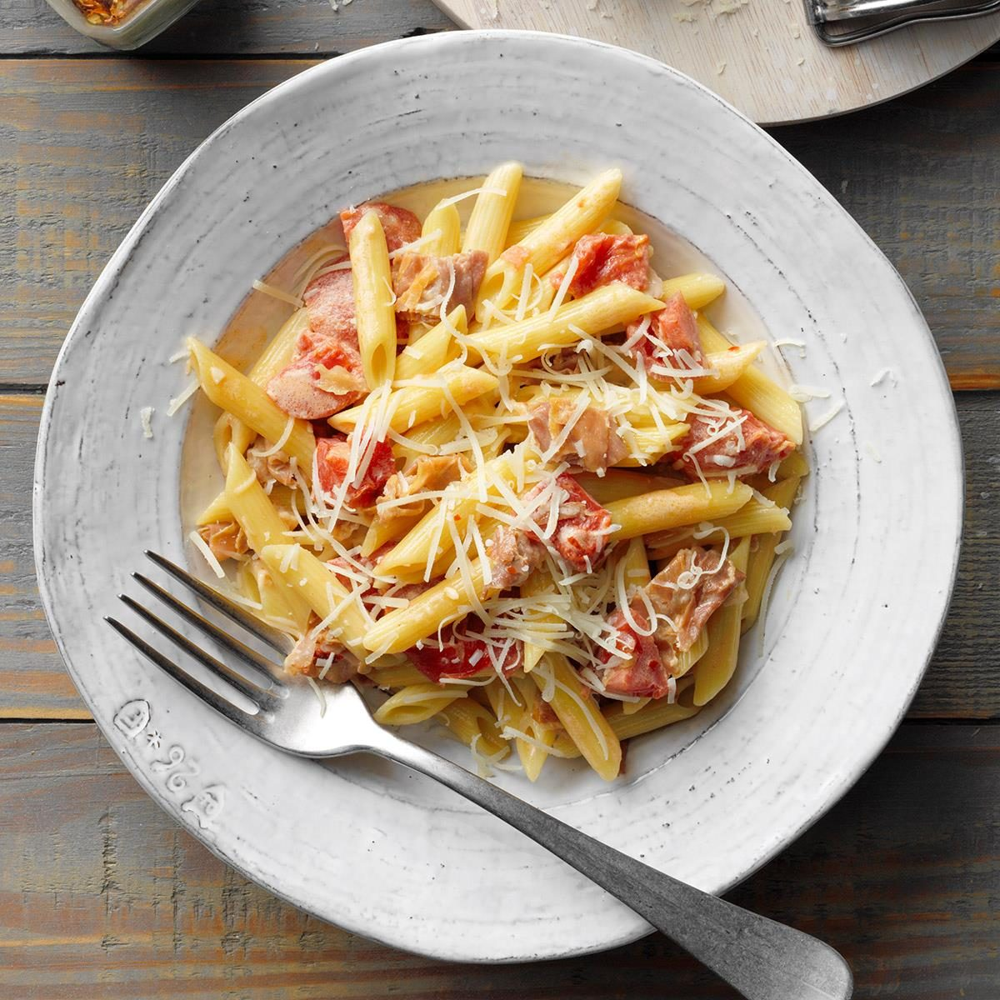

Penne alla Vodka

Penne alla Vodka is a classic Italian pasta dish featuring penne pasta tossed in a creamy tomato sauce infused with the warmth and subtle kick of vodka.
The sauce, enriched with heavy cream and grated Parmesan cheese, creates a luscious and indulgent meal that is both comforting and flavorful.
Ingredients:
- 1 pound (450g) penne pasta
- 2 tablespoons olive oil
- 1 medium onion, finely chopped
- 3 cloves of garlic, minced
- 1/2 teaspoon red pepper flakes (adjust to your spice preference)
- 1 cup vodka
- 1 can (28 ounces/800g) crushed tomatoes
- 1 cup heavy cream/li>
- 1/2 cup grated Parmesan cheese
- Salt and pepper to taste
- Fresh basil leaves, chopped (for garnish)
Steps:
- Cook the penne pasta according to the package instructions until al dente. Drain and set aside.
- In a large skillet or saucepan, heat the olive oil over medium heat. Add the chopped onion and sauté until translucent and slightly golden, about 5 minutes. Stir in the minced garlic and red pepper flakes, and cook for another minute.
- Pour in the vodka and let it simmer for about 5 minutes, allowing the alcohol to cook off.
- Add the crushed tomatoes to the skillet, stirring well to combine with the onion and garlic mixture. Season with salt and pepper to taste. Reduce the heat to low and let the sauce simmer for about 15-20 minutes, stirring occasionally.
- While the sauce simmers, heat the heavy cream in a small saucepan over low heat until warm. Be careful not to let it boil. Once warm, stir the heavy cream into the tomato sauce.
- Add the cooked penne pasta to the sauce and toss until well coated. Cook for an additional 2-3 minutes, allowing the pasta to absorb some of the sauce.
- Remove the skillet from the heat and sprinkle grated Parmesan cheese over the pasta. Toss until the cheese melts and the sauce thickens slightly.
- Serve the Penne alla Vodka hot, garnished with freshly chopped basil leaves.